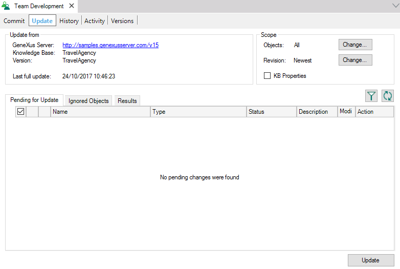
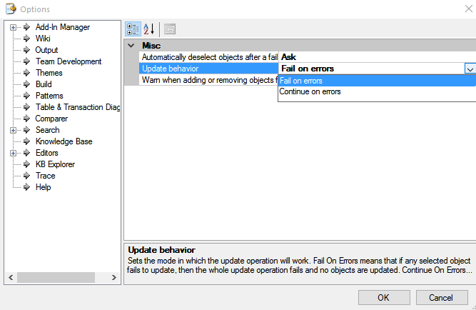
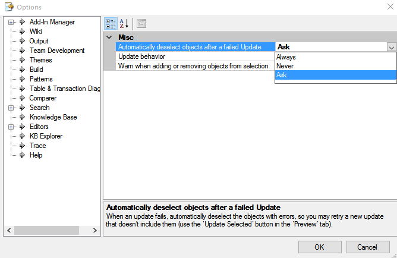

The Update From Server operation allows incorporating to the local Knowledge Base those changes made in the Server Knowledge Base since the last Update From Server operation. Step by stepTo perform an Update operation, the Developer must follow the steps below: 1) Select the Knowledge Manager->Team Development menu option to open the Knowledge Manager Team Development dialog and choose the Update tab.  Note: Remember that by double-clicking upon an object the comparer window will be open showing the differences between the object's local content and the server one. 2) Select the Update option to incorporate all the selected modifications into your local Knowledge Base (those objects which weren't selected in the Pending for Update tab will not be updated). Check the Team Development output window to make sure the operation was completed successfully. Note: Also, the Developer will be able to pick the group of properties to import from GeneXus Server by checking the KB Properties CheckBox. Update To a specific revisionIf the Developer wants to update to a specific revision, at the top-right of the tab, he could change the revision to update from. The Developer could select any revision and update from it. Suppose your local Knowledge Base is at revision 10, but you want it to reflect the state which it had in revision 2 - then simply update to revision 2. Note: By default, the update is compared to the last revision at GeneXus Server. The revisions mentioned above can be find in the Activity of the Knowledge Base in GeneXus Server. Update OptionsIf any object fails to Update, GeneXus provides two options:  1) Fail on errors: The entire operation is reverted, and no object gets modified. In these cases, GeneXus may automatically deselect the objects with errors, so that the Developer can easily retry a new update which doesn't include the failed objects. By default, GeneXus will ask for confirmation before automatically deselecting the objects with errors. Using the Automatically deselect objects after failed Update, located Tool->Options->Team Development, the Developer will be able to configure this behavior.  The possible values are:
2) Continue on errors: Those objects which were successfully updated are kept while the failed objects' behavior is defined by the Developer. For more information, please refer to Update behavior. See Also
|